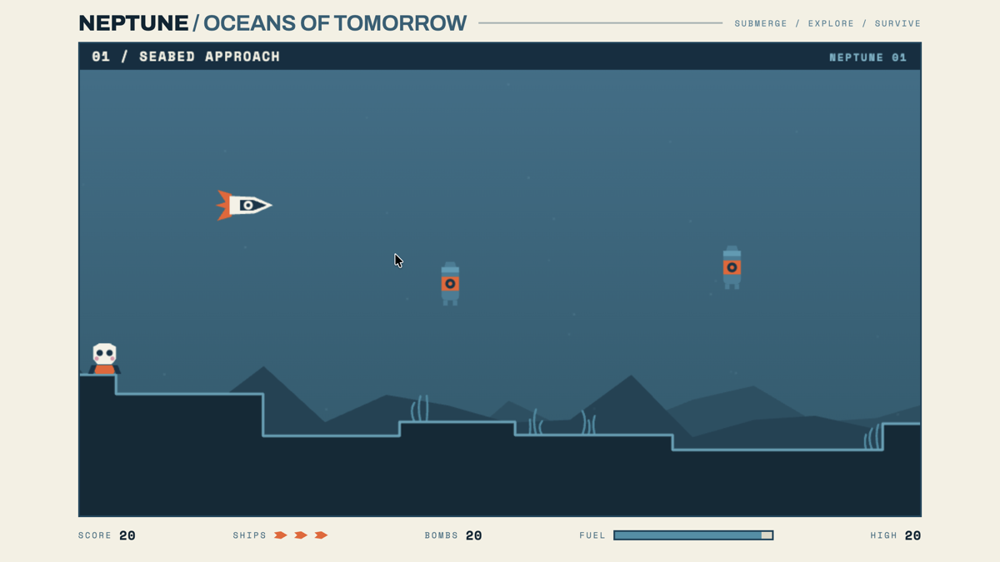
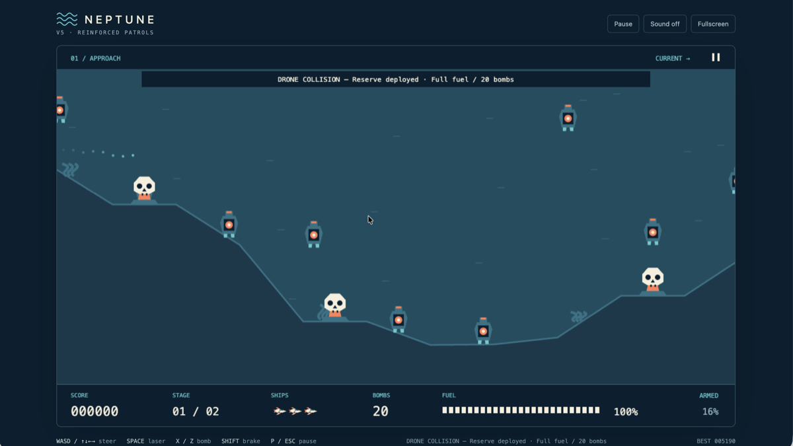

Claude Opus 5.1
Oceans of Tomorrow
Momentum-driven steering, forward laser, twenty depth charges and a fuel gauge that never stops draining.
IJKM / arrows · A or space · Z bomb
Dive →

GPT-6 Astra
Reinforced Patrols
Five ships. Twenty bombs. One deep dive — with touch controls and a virtual stick for phones.
WASD / arrows · space laser · X or Z bomb
Dive →